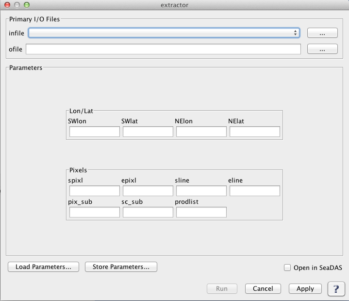

| Product Extractors | |
Creates an extracted data product.
OCSSW -> extractor
Description
GUI Usage
Command Line Usage
The Extractor GUI serves as a front-end to several product extractors provided with SeaDAS:
The extractor GUI initially displays a default window, as shown in the image below, to accept input parameters/options. Once an input file is selected, the program will decide which extractor to be used based on the input file type and display customized GUI for each specific extractor.
|  |
| UI Element Name | Type | Description | Required/Optional | Default Value |
| ifile | ifile | input filename/filelist | Required | |
| ofile | ofile | output bin filename | Required | |
| l3bprod | string | bin products
Set to "ALL" or "all" for all L2 products in 1st input file.
Use ':' or ',' or ' ' as delimiters.
Use ';' or '=' to delineate minimum values.
|
Optional | all products |
| prodtype | string | product type (Set to "regional" to bin all scans.) | Optional | day |
| resolution | string | bin resolution
HH - 50m
HQ - 100 m
Q - 250m
H - 0.5km
1 - 1.1km
2 - 2.3km
4 - 4.6km
9 - 9.2km
18 - 18.5km
36 - 36km
HD - 0.5 degree
1D - 1 degree
|
Optional | H |
| flaguse | string | flags masked | Optional | [see /SENSOR/l2bin_defaults.par] |
| sday | int | start datadate (YYYYDDD) [ignored for "regional" prodtype] | Optional | |
| eday | int | end datadate (YYYYDDD) [ignored for "regional" prodtype] | Optional | |
| suite | string | Optional | ||
| pversion | string | production version | Optional | unspecified |
| rowgroup | int | number of bin rows to process at once | Optional | -1 |
| qual_prod | string | quality product field name | Optional | |
| qual_max | int | maximum acceptable quality | Optional | 2 |
| oformat | string | defines output format:
hdf4
netcdf4
| Optional | netcdf4 |
| night | boolean | Check for SST night processing | Optional | false |
| UI Element Name | Type | Description |
| Browser Button | Button | Selects infile/ofile |
| Load Parameters ... | Button | Reads in previously saved parameters and populates the fields in GUI. |
| Store Parameters ... | Button | Saves the current arguments in GUI in a file. |
| Run | Button | Executes the l2bin command with arguments provided in the UI. |
| Cancel | Button | Closes current processor GUI. |
| Apply | Button | Makes current arguments effective. |
| Open in SeaDAS | Checkbox | If selected, the ofile will be added to the open products list right after its generation. |
| ? | Button | Displays the help content of the current command. |
This is version 0.76 of l1aextract_modis (compiled on Nov 17 2018 15:44:30) Usage: l1aextract_modis infile spixl epixl sline eline outfile where: infile - input MODIS L1A datafile spixl - start pixel number (1-based) epixl - end pixel number (1-based) sline - start line (1-based) eline - end line (1-based) outfile - output file name Note: Enter line number NOT scan number!
Usage:infile spix epix sscan escan pix_sub sc_sub outfile where: infile - input l1a data HDF file spix - start pixel number epix - end pixel number sscan - start scan line escan - end scan line pix_sub - pixel subsampling rate sc_sub - scan line subsampling rate outfile - output file name NOTE: Start and End pixel/scanline will be set to input file's nsamp and nrec respectively, if the given values are out of range.